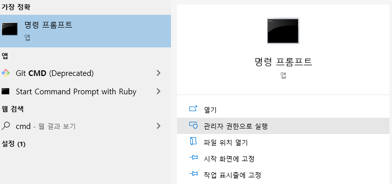

윈도우 버전을 설치 하고 환경 변수를 추가 한다. 환경 변수 추가 방법

명령프롬프트 cmd (파일을 생성할수 있는 권한이 필요하기 때문에 관리자 권한으로 실행으로 실행)
wkhtmltopdf.exe -T 21 -L 21 --print-media-type --disable-smart-shrinking https://www.google.co.kr google.pdf
wkhtmltopdf.exe -T 15 -L 15 --print-media-type --disable-smart-shrinking https://www.google.co.kr printsample.pdf
wkhtmltopdf.exe -O Landscape https://www.google.co.kr googleLandscape.pdf